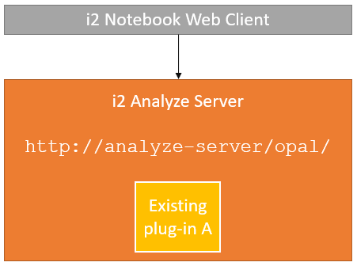
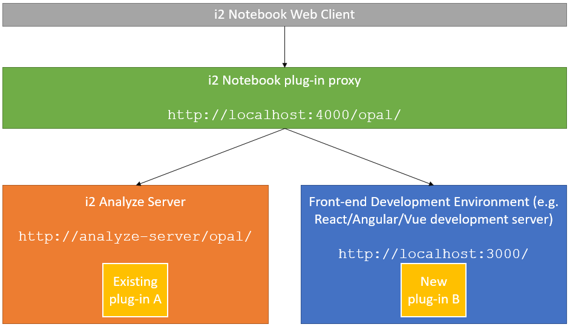
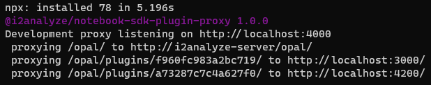

The plug-in development proxy
In a production deployment of i2 Analyze, the i2 Notebook web client connects to the server and fetches the plug-ins that are deployed on that server:

Developing any software, including an i2 Notebook plug-in, is an iterative process: we write code, try it out, write some more code, and so on. If we had to deploy our plug-in code to the i2 Analyze server each time around that iterative loop, it would cost a lot of time and disrupt other server users.
The i2 Notebook SDK provides a more efficient environment in which to develop an i2 Notebook plug-in, through the use of a development proxy:

The SDK proxy server sits in front of both the i2 Analyze server and your plug-in development environment (for example, a React, Angular, or Vue development server). The proxy passes most traffic through to the i2 Analyze server untouched, but it intercepts and modifies requests pertaining to plug-ins. In this way, the proxy server can add your in-development plug-ins "on top" of the i2 Analyze server environment.
The effect of using the proxy is that you can layer a development plug-in on top of an existing i2 Analyze server without affecting that server; and you can use the plug-in live from your development environment without having to copy files around.
Using the development proxy
To use the development proxy, you just need to tell it where to find the i2 Analyze server and your in-development plug-ins, and then launch and connect to it.
Configuring the proxy
You provide the information that configures the proxy in a JSON file that can have any name, and be placed anywhere in your file system.
The i2 Notebook SDK includes a JSON schema that enforces the structure and content of the development proxy configuration file.
You can use the schema to assist during configuration from a compatible editor such as Microsoft Visual Studio Code.
To reference the schema from your configuration file, include the "$schema" field as the first entry, like this:
{
"$schema": "https://i2group.github.io/notebook-sdk/schemas/devproxy.json",
...
}
Development proxy configuration syntax
The following fields are valid in an i2 Notebook development proxy configuration file:
| Name | Mandatory? | Description |
|---|---|---|
plugins |
Yes | The URLs of the development plug-ins. This is an array of strings, with each URL pointing to the root of a plug-in (where the plugin.json file is located). |
port |
Yes | The TCP port that the development proxy should listen on. For example, 4000. |
server |
Yes | The URL of the i2 Analyze server. |
skipHttpsCertificateVerification |
No | A boolean (true/false) indicating whether to skip HTTPS certificate verification. The development proxy is unable to verify some HTTPS (SSL/TLS) certificates, so if either the i2 Analyze server or any plug-ins are running on https:// addresses, you must set this field to true to allow the proxy to run. Be aware that when this field is true, no certificate checking takes place. |
For example:
{
"$schema": "https://i2group.github.io/notebook-sdk/schemas/devproxy.json",
"server": "http://i2analyze-server/opal/",
"port": 4000,
"plugins": ["http://localhost:3000", "http://localhost:4200"]
}
Launching the proxy
The only prerequisite for the development proxy is that you have at least version 12 of Node.js on your development machine. No other installations are required.
If you named your configuration devproxy.json, then you can launch the proxy with:
npx @i2analyze/notebook-sdk-plugin-proxy --config devproxy.json
The proxy starts after a few seconds, with output similar to this:

Then, while you're developing plug-ins, use the URL of the proxy in your web browser instead of the i2 Analyze server URL. The i2 Notebook web client that you see through the proxy includes your in-development plug-ins.
Note: If you're using Create React App (CRA) or Vue CLI to develop your plug-in, be aware that these servers only support IPv4, and might not be compatible with the latest version of the proxy.
To ensure compatibility with these servers, use the following command to launch the latest version of the proxy with the --forceIPv4 flag:
npx @i2analyze/notebook-sdk-plugin-proxy@latest --config devproxy.json --forceIPv4
Alternatively, you can opt to use version 1 of the proxy specifically:
npx @i2analyze/notebook-sdk-plugin-proxy@1 --config devproxy.json
Proxy functions
In addition to layering development plug-ins on top of an existing i2 Analyze server, the proxy provides the following functions:
- It validates any
plugin.json(plug-in manifest) files. Any problems are reported to the proxy's console output. - It simulates an accurate URL path that your plug-in will eventually be deployed to. (For example, the
/opal/plugins/xxxxx/paths in the above output.) This information helps you to identify problems with intra-plug-in paths before you get to deployment. - It switches the i2 Notebook application into a "stricter" plug-in development mode that makes it more sensitive to incorrect API usage at a small performance cost.
Shutting down and restarting the proxy
When you no longer require the proxy, you can shut it down with the Ctrl+C keyboard combination.
If you change the proxy configuration file, you must stop and restart the proxy manually. However, changes to plug-in manifest files, stopping and starting plug-in development servers, and restarting the i2 Analyze server do not require proxy restarts.
Example use
For a worked example of configuring and running a proxy for a simple i2 Notebook plug-in, see the tutorial.